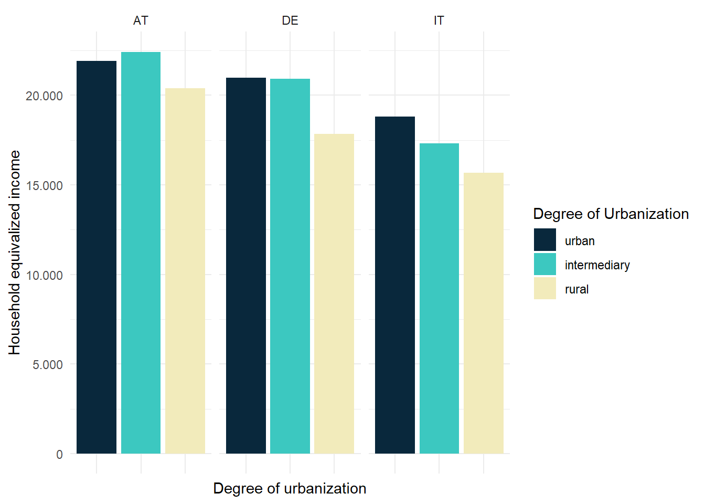
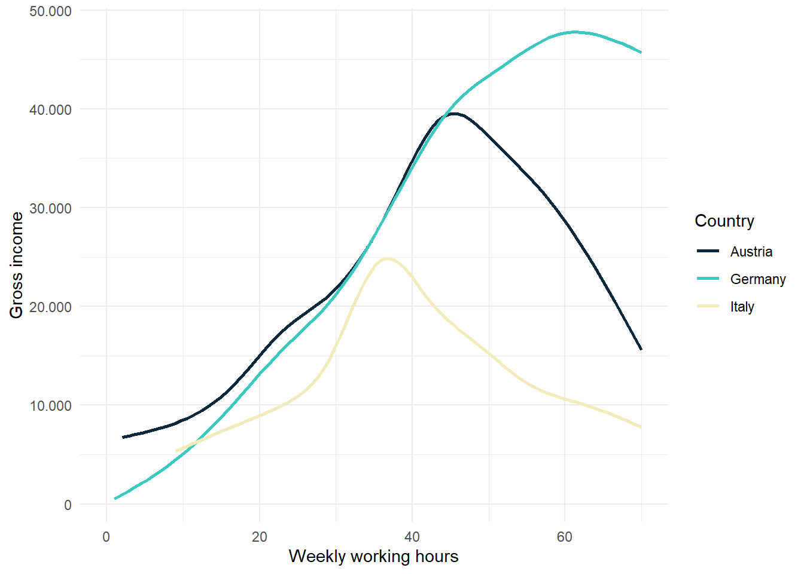

# install.packages("rmarkdown")
library("rmarkdown")
library("tidyverse")
library("ggplot2")
library("stargazer")Unit 4 - Repeating and finishing a project
General overview
What is Quarto?
Quarto enables you to write code and text “as one”. It is the Posit (the company behind RStudio) version of Jupyter Notebooks, which became popular for python in recent years.
How does it work?
Quarto has a source and a visual editor. We will be mostly working in the visual editor. If you go directly to the source, you will see that the underlying “language” is Markdown - a typography language used a lot in programming and text designing. You can do everything with the buttons in the menu above, but you might still learn the most basic markdown shortcuts, e.g. for inserting code or making headings.
To render your document, click the Render button above. You might want to change your settings to render inside the RStudio viewer beforehand.
If you want to run only the code Chunks go to Run and “Run all” or press Ctrl+ Alt + Enter on Windows (and some equivalent on Mac).
Resources
There are numerous markdown guides and cheatsheets available, for example this one. The general guide for Quarto can be found here on quarto.org.
Preparation
YAML code at the top
The Code chunk at the top is called “YAML”, it specifies some of the metadata used throughout the document. Here, you can also change the type of your document output. For working, HTML is suggested. You can always change it to pdf later when exporting the document.
Packages
At first, we need to attach packages. Besides the usual tidyverse package, we also need rmarkdown for this.
Another thing: Whenever you start a code chunk, you can give it some options using #|. An overviewo of execution options can be found here.
Data
Next, we need to import the data. We are going to use the same data as previous weeks - the SILC-Data.
Before we do that we must however take care where our qmd file is located and saved, using the getwd() command. Then we have multiple options to deal with that. The easiest one is to re-define the path we are working at. Make sure, that you change this path whenever you are working on another PC.
getwd()[1] "C:/Users/chimmelb/OneDrive - WU Wien/Dokumente/Flinta-R-Tut-Summer25/analysis"parent_path <- c("C:/Users/chimmelb/OneDrive - WU Wien/Dokumente/Flinta-R-Tut-Summer25")
hh <- readRDS(paste0(parent_path, "/", "data/silc_hh_new.RDS"))
ind <- readRDS(paste0(parent_path, "/", "data/silc_indiv_new.RDS"))
all <- readRDS(paste0(parent_path, "/", "data/silc_all.RDS"))We might also want to look at our data, so let’s do this. glimpse and str both are nice ways to look at data.
glimpse(hh)Rows: 116,569
Columns: 9
$ year <int> 2008, 2008, 2008, 2008, 2008, 2008, 2008, 2008, 2008, 2008, 20…
$ country <chr> "AT", "AT", "AT", "AT", "AT", "AT", "AT", "AT", "AT", "AT", "A…
$ hid <int> 4, 5, 6, 7, 9, 10, 11, 23, 12, 13, 16, 17, 18, 19, 20, 24, 25,…
$ hinc <dbl> 16792.40, 58727.60, 13044.20, 19858.20, 74073.52, 47715.87, 24…
$ hsize <int> 1, 5, 1, 2, 4, 3, 2, 3, 4, 3, 2, 4, 3, 4, 2, 1, 1, 5, 1, 5, 2,…
$ heqinc <dbl> 16792.40, 24469.83, 13044.20, 13238.80, 29629.41, 23857.94, 16…
$ region <chr> "AT3", "AT1", "AT3", "AT3", "AT1", "AT1", "AT2", "AT3", "AT1",…
$ hweight <dbl> 845.0613, 199.2002, 1060.7000, 488.6925, 1155.0970, 550.5005, …
$ degurba <int> 2, 3, 1, 2, 3, 3, 3, 1, 2, 3, 1, 1, 2, 1, 1, 2, 2, 2, 3, 2, 1,…str(ind)'data.frame': 229131 obs. of 12 variables:
$ year : int 2008 2008 2008 2008 2008 2008 2008 2008 2008 2008 ...
$ country : chr "AT" "AT" "AT" "AT" ...
$ pid : int 1001 100101 1002 100201 100202 1003 100401 100402 100501 100502 ...
$ pweight : num 551 583 551 1103 1103 ...
$ birthyear : int 1927 1977 1929 1966 1970 1957 1942 1947 1927 1932 ...
$ sex : int 1 1 2 1 2 2 1 2 1 2 ...
$ educ : int 2 5 2 1 3 2 5 3 2 2 ...
$ empstatus : int NA 2 NA 3 NA 3 3 3 2 NA ...
$ workinghours: int NA 42 NA 32 NA 40 NA NA NA NA ...
$ health : int 3 1 2 2 1 2 3 3 3 3 ...
$ gross_income: num 0 5037 0 7989 0 ...
$ hid : int 10 1001 10 1002 1002 10 1004 1004 1005 1005 ...Recap: dplyr and ggplot
We’re going to make a simple plot: In 2008, mean equivalized household income by country and degree of urbanization.
Data wrangling
df <- hh %>%
filter(year == 2008) %>%
group_by(country, degurba) %>%
summarise(heqinc = weighted.mean(heqinc, hweight))Table
Let’s render the table first.
There are numerous ways to make nice tables. For presentation you might look in to kable(), kableExtra, and gt. Furthermore, you might want to export tables to LaTeX. Here, stargazer is the typical option. Don’t forget to install and attach the packages above though.
knitr::kable(df)| country | degurba | heqinc |
|---|---|---|
| AT | 1 | 21893.91 |
| AT | 2 | 22413.47 |
| AT | 3 | 20394.14 |
| DE | 1 | 20968.12 |
| DE | 2 | 20910.77 |
| DE | 3 | 17842.63 |
| IT | 1 | 18798.08 |
| IT | 2 | 17320.09 |
| IT | 3 | 15671.60 |
Plot
Now we make a nice barchart. Before we do that, however, let’s make an internal link: The data used for the following plot is already displayed in Table 1.
Also, our degurba variable is still a numeric (integer). So let’s recode it to a factor.
In the following code chunk, I use the option #| echo: false. It prevents the R-code from being shown and in the resulting document, only the ggplot is included. If you want this settings to apply to the whole document, you can include it at the YAML code chunk at the top of the quarto document.

Practice time
So now it’s time for you to practice. Make a plot, where you have income on the y axis, and employment hours on the x axis. There should be 3 different lines, one for each country. The year we are doing this for is 2013.

Export
Export the data
For exporting data, we usually use write.csv2 or saveRDS.
Export the plot
You can either manually save a plot or use the ggsave function of the ggplot package (if your plot is a ggplot).
The ggsave function is a bit complicated, which is because of the dpi argument. It tells you the resolution of your plot. High resolutions (dpi = 300 is standard) is good, but make sure to put in high values for width and hight as well. Also make sure your background is “white”.
ggsave(paste0(parent_path, "/outputs/heqinc-degurba.png"),
plot = plot,
dpi = 250,
width = 1440,
height = 810,
units = "px",
bg = "white")Export a LaTeX table
Sometimes, we want our tables to be further used as a LaTeX code. The typical way to go is by using the stargazer package and function.
Don’t run this command if you export your Quarto-document into a pdf. That’s why it’s commented out below.
# stargazer::stargazer(as.data.frame(df), summary = F)I also recommend saving the LaTeX table code as a txt somewhere in your working directory.
stargazer::stargazer(df,
type = "latex",
out = paste0(parent_path, "/outputs/heqinc-degurba.txt"))Other useful stuff
Citations
You can add scientific references and citations for your document. (Eurostat 2024) for example is a citation of the 2023 EU-SILC.
If you add a reference, you can see that quarto automatically creates a bibliography file, adds it to the YAML at the beginning, and includes it at the bottom of this document.
Maths
For Mathematics, LaTeX is the most convenient language. You can insert LaTeX code just like other languages like python or julia.
For example: household income is the sum of personal income.
\[ Householdincome = \sum_i^n pinc_i \]
Or, just to use fractions let’s add the formula used in schools for estimating percentages.
\[ A = G * \frac{p}{100} \]
Rendering as pdf
To render this document not as HTML but in any other format, change the YAML at the top. Typically, you want to work with an html document until you’re done. Then, for exporting, you might want to change it to pdf. You might have some trouble rendering due to your latex installation (at least it’s often troublesome for me). I mostly use overleaf to write presentations and reports of my research (an online editor for LaTeX).
References
Eurostat. 2024. “EU Statistics on Income and Living Conditions Microdata, 2024 Release, Data Covering Years 2004-2023.” Eurostat. https://doi.org/10.2907/EUSILC2004-2023.